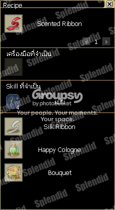

คำถามปลีกย่อยขอให้มาตั้งในกระทู้นี้คะ ตอบวันต่อวันคะ
 โดย ECO » ศุกร์ 09 พ.ย. 2007 9:06 pm
โดย ECO » ศุกร์ 09 พ.ย. 2007 9:06 pm
Pantera เขียน:Powder หาได้จากไหนครับ จาทำเควสเปลี่ยนอาชีพอาเคมิสอะงับ
Powder ได้จาก Dry Powder + Seriko 4ea.
ใช้สกิล Drug Create Lv.2
หรือนำไปให้ NPC ผสมให้ก็ได้ค่ะ เลือกหัวข้อ "ผสมยาให้หน่อย"
- ECO
- Dark Warrior

- โพสต์: 276285
- ลงทะเบียนเมื่อ: พุธ 26 ต.ค. 2011 9:31 pm
 โดย ECO » เสาร์ 10 พ.ย. 2007 3:23 am
โดย ECO » เสาร์ 10 พ.ย. 2007 3:23 am
bahamutray เขียน:คืออยากถามวิธีทำและรูปของส่วนประกอบ หมวกทาทาราเบะ เลเวล 35 ครับ ไปดูกระทู้ชุด 35 รูปไม่มีแล้ว เพราะฉะนั้นรบกวนด้วยครับ
~ R E C I P E S ~ Expert in Making a Dress Recipes ~
บอกว่า Casino Bandana ทำมาจาก
อุปกรณ์ : Sew Equipment
1. Great Silk
- Purify : Great Cotton
2. Scented Ribbon
- Silk Ribbon
--- Sew Create : Silk
- Happy Cologne
--- Drug Create : 4 Leaf Clover
--- Distilled Water
------ Purify : 2 Mineral Water
--- Career Oil
--- Ether
- Bonquet
--- Purify : 4 Flower
3. Easy Thread
- Purify Crawler Lash
4. Undente Treasure
ส่วนรูป ... 3 รูปน่าจะพอแล้วมั้ง ^^"




- ECO
- Dark Warrior
- โพสต์: 276285
- ลงทะเบียนเมื่อ: พุธ 26 ต.ค. 2011 9:31 pm
 โดย ECO » เสาร์ 10 พ.ย. 2007 7:48 am
โดย ECO » เสาร์ 10 พ.ย. 2007 7:48 am
ขอบคุณมากครับละเอียดโดนใจเลย Undunte tressure หาจากไหนครับ
แล้วก็เสื้อขาวที่ใช้ทำเสื้อพละน่ะครับ ผมมีเสื้อแล้วจะไปย้อมสีขาวยังไง
ป.ล.ตูนี่ปัญหาเยอะจริงวุ้ย
Smock (W) หาจากไหนหรือครับไอ้ผมก็นึกว่า T-Shirt *-* อย่าพึ่งรำคาญเน้อเหอๆ
แล้วมันแรนดอมสีด้วยรึเนี่ย*-*
แล้วก็เสื้อขาวที่ใช้ทำเสื้อพละน่ะครับ ผมมีเสื้อแล้วจะไปย้อมสีขาวยังไง
ป.ล.ตูนี่ปัญหาเยอะจริงวุ้ย
ส่วน Smock (W) เอาไปย้อมกับ Dyed Aunt ที่ Downtown
ขอให้โชคจงอยู่กับเสื้อของท่าน
Smock (W) หาจากไหนหรือครับไอ้ผมก็นึกว่า T-Shirt *-* อย่าพึ่งรำคาญเน้อเหอๆ
แล้วมันแรนดอมสีด้วยรึเนี่ย*-*
- ECO
- Dark Warrior
- โพสต์: 276285
- ลงทะเบียนเมื่อ: พุธ 26 ต.ค. 2011 9:31 pm
 โดย ECO » เสาร์ 10 พ.ย. 2007 2:23 pm
โดย ECO » เสาร์ 10 พ.ย. 2007 2:23 pm
Undente Treasure หาได้จาก ลูกไฟแดงเมืองใต้ที่ชื่อ Undente (หรือ Andente นี่ละ)
หายากระดับ Rare ... แต่ถือได้ว่าเป็นของไม่มีประโยชน์ ชาวเมืองใต้บางคนอาจเก็บสะสมไว้อยู่
ส่วน Smock (W) เอาไปย้อมกับ Dyed Aunt ที่ Downtown
ขอให้โชคจงอยู่กับเสื้อของท่าน :lol:
หายากระดับ Rare ... แต่ถือได้ว่าเป็นของไม่มีประโยชน์ ชาวเมืองใต้บางคนอาจเก็บสะสมไว้อยู่
ส่วน Smock (W) เอาไปย้อมกับ Dyed Aunt ที่ Downtown
ขอให้โชคจงอยู่กับเสื้อของท่าน :lol:
- ECO
- Dark Warrior
- โพสต์: 276285
- ลงทะเบียนเมื่อ: พุธ 26 ต.ค. 2011 9:31 pm
 โดย ECO » เสาร์ 10 พ.ย. 2007 7:54 pm
โดย ECO » เสาร์ 10 พ.ย. 2007 7:54 pm
bahamutray เขียน:ส่วน Smock (W) เอาไปย้อมกับ Dyed Aunt ที่ Downtown
ขอให้โชคจงอยู่กับเสื้อของท่าน
Smock (W) หาจากไหนหรือครับไอ้ผมก็นึกว่า T-Shirt *-* อย่าพึ่งรำคาญเน้อเหอๆ
แล้วมันแรนดอมสีด้วยรึเนี่ย*-*
ไม่แน่ใจใช่เสื้อของผู้หญิง(น่าจะเผ่าอีมิล)ที่ได้มาตอนเริ่มเกมมั้ย = =
- ECO
- Dark Warrior
- โพสต์: 276285
- ลงทะเบียนเมื่อ: พุธ 26 ต.ค. 2011 9:31 pm
 โดย ECO » อาทิตย์ 11 พ.ย. 2007 1:44 am
โดย ECO » อาทิตย์ 11 พ.ย. 2007 1:44 am
swarthz01 เขียน:metal piece หาจากไหนคราบบ
มีแต่MachinePieceน่ะ พบได้เรื่อยเปื่อยในหอคอยแสงดรอปจากหุ่นทุกแบบ
bahamutray เขียน:ถุงเท้าที่เป็นผ้าพันแผลน่ะครับ(Bandage) เปิดกล่องอะไรถึงได้ หรือว่าถ้าทำเองได้จะทำยังไงครับ
ขอโทษทีที่ถามบ่อยๆช่วงนี้กำลังบ้าของแฟชั่นอยู่
เปิดก่องหรอกหรอ ไปเจอตกที่หอคอยแสงเลยเกบมา(ไม่รุดรอปจากมอนหรือคนทิ้งไว้ เอามาพันขาล่ะ)
- ECO
- Dark Warrior
- โพสต์: 276285
- ลงทะเบียนเมื่อ: พุธ 26 ต.ค. 2011 9:31 pm
 โดย ECO » อาทิตย์ 11 พ.ย. 2007 4:25 am
โดย ECO » อาทิตย์ 11 พ.ย. 2007 4:25 am
Yume เขียน:Dark Cologne นี่ไม่สามารถผสมยาสร้างขึ้นได้เหมือนกับธาตุอื่นๆเหรอครับ ?.........
แล้วที่ไหนมันพอจะดรอบบ่อยมั่ง รบกวนช่วยบอกทีครับ......
ขอบคุณครับ........
ล่าสุด เขาว่ากันว่า ... นางงูเหลือง Shevalis ในหอแสงชั้น 2 ให้ Dark Cologne ไม่ยาก
ชั่วโมงละ 1 - 5 ขวด ราวๆ นี้คะ
แต่สำหรับชั้น (ซึ่งคงจะไม่ไปหอแสงอีกนาน ... ตราบเท่าที่ Bean 180+ ยังไม่หมดโกดัง)
เปิด Treasure Box บ่อยๆ ก็ได้มา 2 - 3 ขวดละ
ปล. ราคาตลาดของ Dark Cologne ในโกเลม คือ 10k
- ECO
- Dark Warrior
- โพสต์: 276285
- ลงทะเบียนเมื่อ: พุธ 26 ต.ค. 2011 9:31 pm
อยากรู้จริงๆคับ
 โดย ECO » อาทิตย์ 11 พ.ย. 2007 9:50 am
โดย ECO » อาทิตย์ 11 พ.ย. 2007 9:50 am
อาวุธ เครื่องดนตรีเวลต่างๆของ Bard
มันมี ระดับ Lv.เท่าไรบ้าง และมีขายที่ไหนบ้าง
วันก่อนเห็นคนตั้งขาย พิญ Lv.30 ด้วยแต่ไม่ได้พกเงินติดตัวไป
เลยซื้อมะทัน รบกวนผู้รู้ช่วน บอกทีนะครับ จ้าววว นายยยย....
มันมี ระดับ Lv.เท่าไรบ้าง และมีขายที่ไหนบ้าง
วันก่อนเห็นคนตั้งขาย พิญ Lv.30 ด้วยแต่ไม่ได้พกเงินติดตัวไป
เลยซื้อมะทัน รบกวนผู้รู้ช่วน บอกทีนะครับ จ้าววว นายยยย....
- ECO
- Dark Warrior
- โพสต์: 276285
- ลงทะเบียนเมื่อ: พุธ 26 ต.ค. 2011 9:31 pm
ผู้ใช้งานขณะนี้
่กำลังดูบอร์ดนี้: ไม่มีสมาชิก และ บุคคลทั่วไป 1 ท่าน